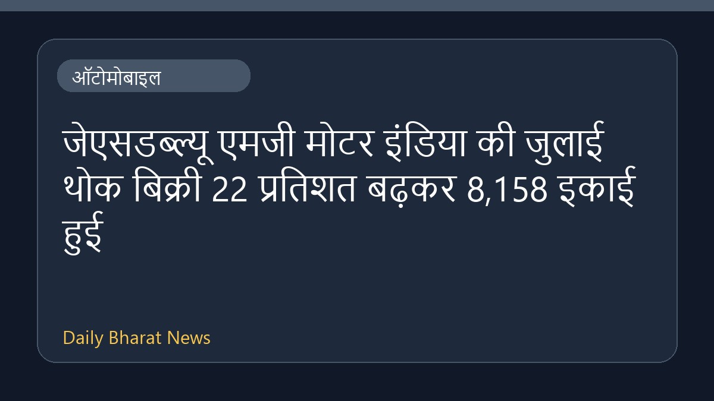

जेएसडब्ल्यू एमजी मोटर इंडिया की जुलाई थोक बिक्री 22 प्रतिशत बढ़कर 8,158 इकाई हुई

जेएसडब्ल्यू एमजी मोटर इंडिया ने जुलाई महीने के आंकड़ों की घोषणा कर दी है। कंपनी की थोक बिक्री में 22 प्रतिशत की वृद्धि दर्ज की गई है। इस दौरान कुल मिलाकर 8,158 इकाइयों का रिकॉर्ड प्रेषण दर्ज किया गया है। वाहन क्षेत्र से जुड़े इस प्रदर्शन को कंपनी के लिए एक महत्वपूर्ण उपलब्धि माना जा रहा है। हालांकि, इस रिपोर्ट में बिक्री से जुड़ी अन्य विशिष्ट जानकारियाँ या खंडवार आंकड़े उपलब्ध नहीं कराए गए हैं।
मूल स्रोत: Automobile News Sources
JSW MG Motor India's July dispatches rise 22% to record 8,158 units - Business Standard ↗
JSW MG Motor India's July dispatches rise 22% to record 8,158 units - Business Standard ↗